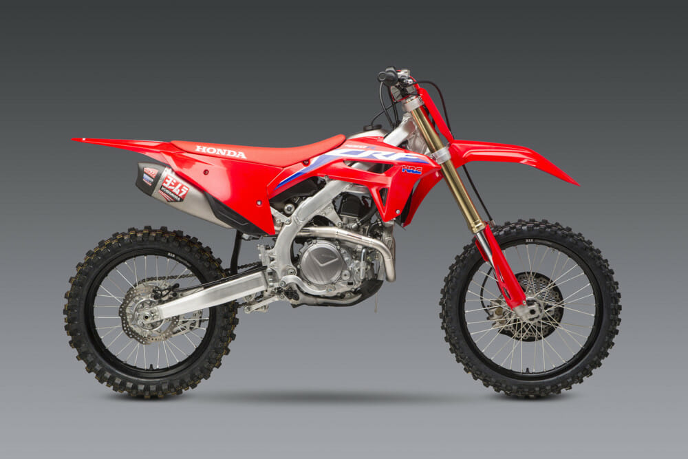

It wasn’t the first, and it hasn’t always been the best or the fastest, but the Honda CRF450R is the poster child of American motocross. It has been almost from the day it was released in 2002. Prior to that, the world of four-stroke MX had been Yamaha’s private playground, but it still wasn’t mainstream. It was the arrival of the Honda that made us all realize that the world was changing and that motocross would never be quite the same again. We have had mixed feelings about the CRF throughout its history. There have been years when we loved it and years when we didn’t. We’re not alone in that regard. The Honda has gone through four major revisions in its 12-year history, changing its personality somewhat every time. But, throughout those cycles, it has always maintained the same essence and has always been popular with rank-and-file American motocrossers. Here are the highlights, lowlights, problems and fixes in the life of the Honda CRF450R.
